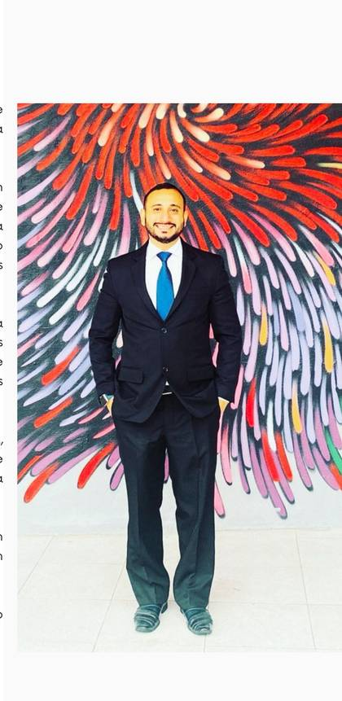

Como Presidente da CORED, acredito que toda transformação da nossa categoria começa pela educação.
Se queremos Técnicos e Tecnólogos em Radiologia mais valorizados, preparados e reconhecidos, precisamos investir na formação, na atualização profissional e no conhecimento. A Radiologia evolui todos os dias, e nós precisamos evoluir junto com ela.
Não formamos apenas profissionais para operar equipamentos. Formamos pessoas responsáveis pelo cuidado, pela segurança e pela qualidade do atendimento aos pacientes.
Se queremos mudar a nossa categoria, precisamos começar pela base: pela sala de aula, pelos professores, pelos alunos e pela educação continuada.
Uma categoria forte se constrói com conhecimento, ética e profissionais bem preparados.
E é pela educação que vamos transformar o futuro da Radiologia.
